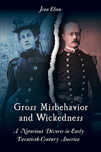

<HTML><head>
<meta name='robots' content='noindex,nofollow' /><script> (function(i,s,o,g,r,a,m){i['GoogleAnalyticsObject']=r;i[r]=i[r]||function(){  (i[r].q=i[r].q||[]).push(arguments)},i[r].l=1*new Date();a=s.createElement(o),  m=s.getElementsByTagName(o)[0];a.async=1;a.src=g;m.parentNode.insertBefore(a,m)   })(window,document,'script','//www.google-analytics.com/analytics.js','ga');   ga('create', 'UA-43183130-1', 'temple.edu');   ga('send', 'pageview'); </script><title>Jean Elson: Gross Misbehavior and Wickedness - Print</TITLE><link rel="stylesheet" href="../general.css" type="text/css"><SCRIPT LANGUAGE = JAVASCRIPT></SCRIPT></HEAD><BODY LINK="#3152A5" VLINK="#3152A5" ALINK=Gray BGCOLOR=White><CENTER><P CLASS=intro><br>This fascinating story of the troubled marriage and acrimonious divorce of Nina and James Walker elucidates early twentieth-century gender and family mores<br><br></P></CENTER><br>&nbsp;<!--none//--><Table width="100%" border=0 cellspacing=5><tr><td width="175" align="center"></td><td><h1 class = "booktitle">Gross Misbehavior and Wickedness</h1> <h1 class = "subtitle">A Notorious Divorce in Early Twentieth-Century America</h1><h3 class="author">Jean Elson</h3><p class="info">paper EAN: 978-1-4399-1391-8 (ISBN:1-4399-1391-9)</br>$34.95, Jun 17, <font color=#990033>Available</font><br><p class="info">cloth EAN:  978-1-4399-1390-1 (ISBN:1-4399-1390-0)</br>$99.50, <font color=#990033>Available</font><br><p class="info">Electronic Book EAN: 978-1-4399-1392-5 (ISBN:1-4399-1392-7)</br>$34.95, <font color=#990033>Available</font><br>
<p class="info">336 pp, 6 x  9, 13 halftones</p></td></tr></table></P></td></tr></table><BR><BLOCKQUOTE>
        <p>"Gross Misbehavior and Wickedness <em> is a fascinating true story. Based on excellent archival work and Elson's precise scholarship, this meticulous contextualizing of divorce from a woman's point of view in the early twentieth century also has contemporary applications regarding gender relationships. Elson gradually reveals how women's rights have evolved over the years and why changes in U.S. divorce laws were essential. The narrative has several twists&#8212;it reads like a contemporary detective novel&#8212;as every legal victory for each side was appealed by the other. This is a moving and captivating book</em>."<br>
        &#8212;<strong>Elizabeth Ettorre</strong>, Professor Emerita of Sociology in the School of Law and Social Justice at the University of Liverpool and author of <em>Autoethnography as Feminist Method: Sensitising the Feminist "I"</em><br>
        </p>
        <p></BLOCKQUOTE><P><p>The bitter and public court battle waged between Nina and James Walker of Newport, Rhode Island, from 1909 to 1916 created a sensation throughout the nation, with lurid accounts of their marital troubles fueling widespread gossip. The ordeal of this high-society couple, who wed as much for status as for love, is one of the prime examples of the growing trend of women seeking divorce during the early twentieth century.  <br/><br/> <i>Gross Misbehavior and Wickedness&#8212;</i>which takes its title from the charges Nina levied against James for his adultery (with the family governess) and extreme cruelty&#8212;recounts the protracted legal proceedings in juicy detail.<br><P CLASS="top"><A HREF="#top">BACK TO TOP</A></P><P><P><h2  class="inpageheading"><A NAME="excerpt"></a>Excerpt</h2><p><A HREF="http://www.temple.edu/tempress/chapters_2400/2417_ch1.pdf"> Read the Prologue (pdf).</A><br><P CLASS="top"><A HREF="#top">BACK TO TOP</A></P></P></P><P></b></p><p></p><h2 class="inpageheading"><A NAME="contents"></a>Contents</h2><P><span style="font-family: 'Verdana';font-size: 13px;" >Prologue<br/>1. Coming Together and Coming Apart<br/>2. The Perfect Couple? A Dissenting Note<br/>3. Early Days: Winter 1897 to Summer 1905<br/>4. A Series of Temporary Truces: Summer 1905 to Summer 1909<br/>5. The Beginning of the End: Summer 1909 to February 1911<br/>6. Some Cases Are Simple; This One Is Not: March 1911<br/>7. Conflicting Testimonies: March 1911<br/>8. A Baffling Piece of New Evidence: Spring 1911 to December 1912<br/>9. More Trials and Tribulations: January 1913 to November 12, 1913<br/>10. A Question of Virginity: November 13&ndash;21, 1913<br/>11. &ldquo;Gross Misbehavior and Wickedness&rdquo;: December 4, 1913, to December 4, 1916<br/>Epilogue: The Rest of Their Lives<br/><br/>Author&rsquo;s Notes<br/>Notes<br/>Index</span></P><br><P CLASS="top"><A HREF="#top">BACK TO TOP</A></P></p><P></p><p></b></p><BR><p></p></P><BR>&nbsp;<p><P><H2  class="inpageheading"><A NAME="author bio"></a>About the Author(s)</H2><p><b>Jean Elson</b> is Senior Lecturer Emerita in the Department of Sociology at the University of New Hampshire and the author of<i> Am I Still a Woman? Hysterectomy and Gender Identity </i>(Temple).<br><P CLASS="top"><A HREF="#top">BACK TO TOP</A></P></P><p><h2  class="inpageheading"><A NAME="subjects"></a>Subject Categories</h2><P><A HREF="/tempress/history.html" TARGET="_top">History</a><BR><P><A HREF="/tempress/sociology.html" TARGET="_top">Sociology</a><BR><P><A HREF="/tempress/women.html" TARGET="_top">Women's Studies</a></P></P></p><P></P><P>&nbsp;</P><font face="Arial" size="1"><a href="copyright.html" OnMouseOver="window.status='Web Copyright Policy';return true;" OnMouseOut="window.status=''" TITLE="Web Copyright Policy">&copy;</a> 2017 <a href="http://www.temple.edu" target="new" OnMouseOver="window.status='Link to Temple University home page';return true;" OnMouseOut="window.status=''" TITLE="Link to Temple University home page">Temple University</a>. All Rights Reserved. This page: <a href="http://www.temple.edu/tempress/titles/2417_reg.html"OnMouseOver="window.status='Link to the book page';return true;" OnMouseOut="window.status=''" TITLE="Link to the book page">http://www.temple.edu/tempress/titles/2417_reg.html.</a></font></BODY></HTML>                    
